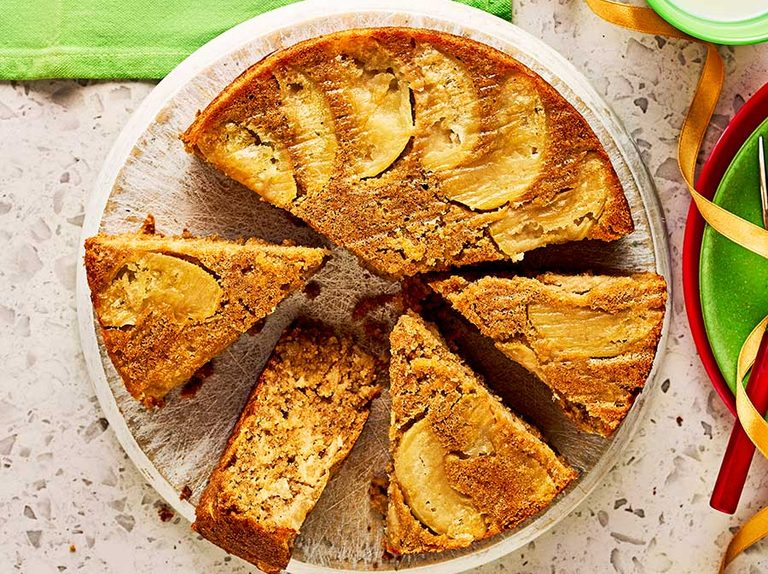

-

Apple Cinnamon White Cake
Ingredients
- Brown Sugar - 1/3 cup
- Cinnamon - 1 teaspoon
- Sugar - 2/3 teaspoon
- Butter - 1/3 cup
- Eggs - 2
- Vanilla - 1/2 teaspoon
- Flour - 1 1/2 cup
- Milk - 1/2 cup
- Apple - 1, Diced
Method of Preparation
Preheat oven to 350°. Mix brown nsugar and cinnamon. In another bowl, beat sugar and butter. Add eggs and vanilla and mix.
In another bowl, mix flour and baking powder and pour into the batter. Mix and add milk and stir till thick and smooth.
Pour part of the batter into a greased baking pan and top with apples and brown sugar mixture. Top with more batter, apples and brown sugar mixture until the batter is exhausted. Pat the apples and swirl the brown sugar.
Bake for 30-40 minutes.